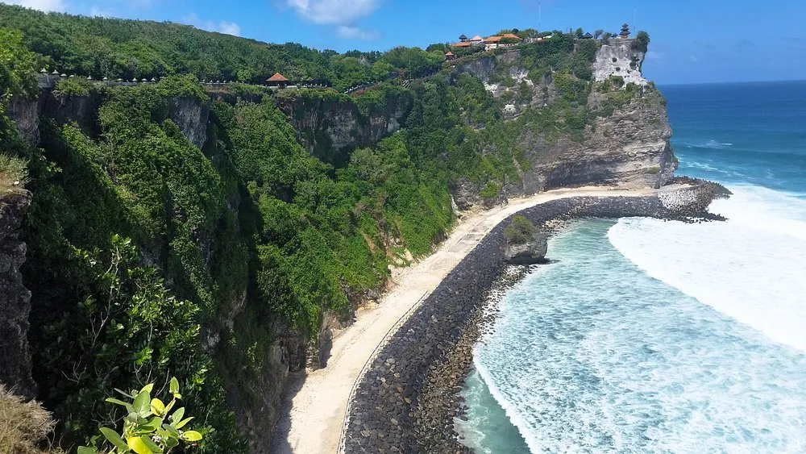
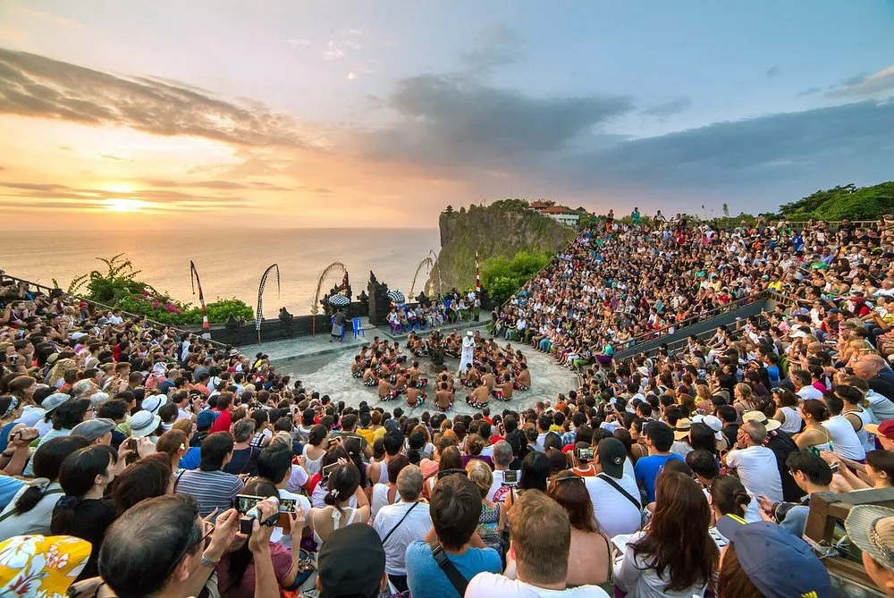

Discover the magic of South Bali with our exclusive all-inclusive Uluwatu Full Day Tour. This carefully crafted itinerary combines stunning coastal scenery, rich cultural heritage, and a mesmerizing sunset experience. From the towering GWK statue to a cliffside temple performance and romantic beachfront dining, this tour showcases the absolute best of the Bukit Peninsula.
Tour Itinerary
-
1. GWK Cultural Park
Marvel at the colossal 122-meter statue of Lord Vishnu — a breathtaking symbol of Indonesian heritage.
-
2. Padang Padang Beach
Relax on the pristine white sands of this world-famous surfing beach tucked beneath dramatic limestone cliffs.
-
3. Pura Luhur Uluwatu Temple
Explore one of Bali's most spectacular temples, perched 70 meters above the roaring Indian Ocean.
-
4. Kecak & Fire Dance Performance
Watch dozens of men chant the Ramayana around a blazing fire as the sun sets over the ocean.
-
5. Jimbaran Bay Seafood Dinner
Dine by candlelight on the sandy shore with freshly grilled seafood and the sound of the waves.
Tour Gallery







Frequently Asked Questions
The all-inclusive tour covers private A/C transport, GWK Cultural Park entrance tickets, Padang Padang Beach access, Uluwatu Temple entrance and sarong rental, Kecak Fire Dance performance tickets, and a Jimbaran Bay seafood dinner. Personal drinks and shopping are not included.
Hotel pick-up starts around 09:00–10:00 AM. The tour follows the cultural sites during the day, the Kecak Fire Dance begins at sunset (around 6:00 PM), and the Jimbaran Bay seafood dinner ends around 9:00–9:30 PM before your hotel drop-off.
Shoulders and knees must be covered when entering Uluwatu Temple. A sarong and sash are required — these are included in the tour entrance fee. We recommend wearing comfortable clothes that can be easily layered.
The temple's macaque monkeys are notorious for snatching glasses, hats, and loose items. Your guide will brief you before entering. We strongly recommend removing sunglasses and caps, and securing all bags and accessories before entering the temple grounds.
Yes! Jimbaran Bay tables are set directly on the sand. You dine by candlelight with the sound of the waves, choosing from freshly grilled seafood, rice, and sides — one of the most memorable dining experiences in all of Bali.